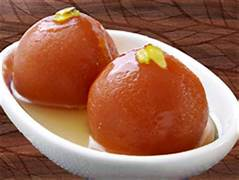
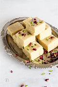

Gulab Jamun
Ingredients
- Sugar
- Maida
- Water
- Milk
- Oil
Recipe
- Take 1 cup khoya or mawa (200 grams) in a bowl and kneads very well..
- Then add ¾ cup (100 grams) grated paneer, 2 tablespoons fine rava (semolina), 2 tablespoons all-purpose flour, ¼ teaspoon baking powder and ½ teaspoon cardamom powder to the mashed khoya.
- Mix well.
- Add 1 tablespoon milk and gather together to form a dough with milk.
- Mix 1.75 cups (250 grams) sugar in 1 cup water.
- On a medium-low flame, heat the sugar solution till it becomes thick and sticky.
- Add rose water and stir. Set the sugar solution aside
- After 30 minutes, make small balls from the dough without cracks.
- Heat oil to a medium-low or low and wait for a minute. Then gently place a single dough ball in the oil.
- Once the jamun start to have tiny golden spots, keep on rotating them in the oil so that the balls are evenly browned.
- Place the hot fried dough balls in the sugar syrup. Continue to fry the rest of the dough balls in batches, giving them a quick drain on paper towels before adding them to the sugar syrup while they are still hot.
- When all the gulab jamun are placed in the sugar syrup, then keep the whole pan on a low flame for 1 to 2 minutes.
- Serve gulab jamun warm or at room temperature.Enjoy!

Barfi
Ingredients
- Sugar
- Milk Powder
- Water
- Milk
Recipe
- firstly, in a bowl take 2½ cup milk powder, ¾ cup sugar and 1 cup milk.
- whisk and mix well until everything is well combined.
- transfer the mixture into large kadai. recommend using nonstick pan to prevent from sticking
- also add ¼ cup ghee and mix well on low flame.
- keep stirring on low flame until the mixture thickens.
- the mixture will hold the shape and starts to separate the pan after 10 minutes.
- do not overcook, as the burfi will turn hard. and if the mixture is undercooked then it turns chewy.
- transfer the burfi dough into the tray lined with baking paper.
- press gently, making sure its leveled up.
- top with few chopped pistachios and press gently.
- cover and refrigerate for 1 hour or until it sets completely.
- after 1 hour, unmould the burfi and cut with sharp knife.
- finally, milk burfi recipe tastes great for a week when stored in an airtight container.

Veg MOMO
Ingredients
- Maida/Flour
- Vegetables
- Water
- Salt
- Oil
Recipe
- Cut all vegetables like carrot, capsicum, onion, ginger , garlic
- Add 3/4 cup maida, 1 teaspoon oil and salt in a large bowl.
- Mix all ingredients well and prepare a soft pliable dough by adding water as needed. Cover the dough and keep it aside for 20-25 minutes
- Heat 1 tablespoon oil in a pan over medium flame. Add finely chopped ginger and garlic and sauté for 30 seconds. Add green onion and sauté for a minute
- Add all chopped veggies and salt.
- Add 1 teaspoon chilli sauce.
- Add 1/2 -1 teaspoon soy sauce.
- Add 1/2 teaspoon black pepper powder.
- Mix well and sauté for a minute. Stuffing for Veg Momos is ready
- Knead the dough again for a minute and divide it into 2-equal portions. Cut each one into 6-7 equal portions .
- Give each small portion a round shape like ball and flatten it a little into pattie by pressing it in between your palms.
- Place one dough pattie on a rolling board and roll it out into a thin disc. Roll it from sides and keep the center portion little thick compared to sides.
- Place approx. 1 tablespoon filling in the center. Don’t over-stuff it, otherwise it will be difficult to get a proper “potli” shape.
- Join them in the center to seal it.
- Grease a steamer plate or any other plate with oil to prevent them sticking. You can also line a plate with cabbage leaf instead of greasing the surface with oil.
- Heat 1-2 glass of water in a steamer
- Place stand in the steamer and place momos plate over it.check them by touching it. If they don’t feel sticky then it means they are cooked.
- Transfer them to a serving plate. Serve hot Veg Momos with Momos Chutney or Schezwan Sauce.
Pizza
Ingredients
- Yeast
- Vegetables
- Maida
- Cheese
Recipe
- Take a dough kneading plate and add all-purpose flour to it. Next, add salt and baking powder in it and sieve the flour once.Add 2 teaspoon of olive oil to it. On the other hand, take a little warm water and mix the yeast in it along with 1 teaspoon of sugar.The yeast will rise in the meantime.
- Preheat the oven at 180 degree Celsius. Now, is the time to make the pizza base when the dough is ready.Take a pizza dough. Using a rolling pin, roll this dough into a nice circular base. Once you have made the base, use a fork and prick the base. Put it into the preheated oven and bake it 10 minutes.
- Now,take capsicum and slice it thinly in a bowl. Then, peel the onions and cut thin slices. And finally, cut tomatoes and mushrooms in the same manner.
- Then, take the fresh pizza base and apply tomato ketchup all over. Spread half the processed cheese all over the base and evenly put the veggies all across the base and then put a thick layer of mozzarella cheese.
- Put this pizza base in a baking tray and place it inside the oven. Let the pizza bake 10 minutes at 250 degree Celsius. Once done, take out the baking tray and slice the pizza. Sprinkle oregano and chilli flakes as per your taste and serve hot.